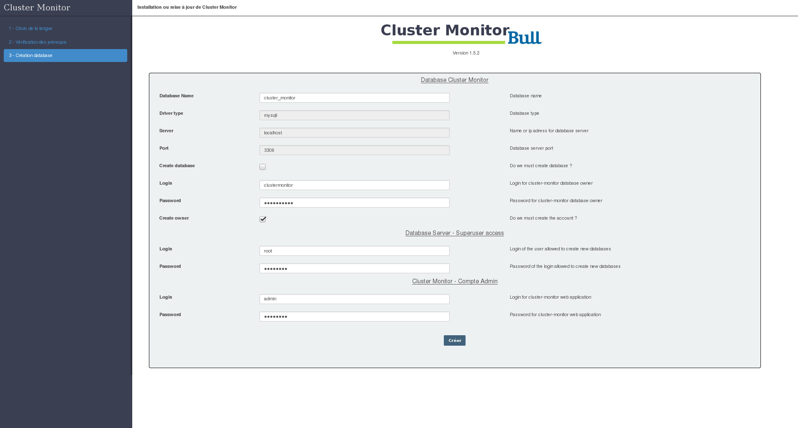

Process to install

A - Install interface web
- Download zip on github, extract and copy ClusterMonitor_web on your web directory( /var/www)
- Rename ClusterMonitor_web to clusterMonitor
$ mv clusterMonitor
- Change right to www-data
$ chown -R www-data. clusterMonitor
- Connect to your web serveur http://server/clustermonitor
- Create crontab fo history
00 */2 * * * php5 /var/www/cluster-monitor/cron/clean_dbd.php 1>/dev/null 2>&1
This definition is allowed for historical elements. The values are to be translated in the web interface under an administrator account
- Follow the instructions

B - Install the collector on a cluster
- Download zip on github, extract and copy ClusterMonitor_Collecteur/srv/cluster_monitor on your prefer directory( /srv/cluster_monitor)
- Change rights to root ( chown -R root. clusterMonitor)
- Configure this collector
- Change variable WORK_DIR= on *.sh
#!/bin/bash
# Information : le cluster doit être d'abord insérer en base côté server
# Paquets nécéssaire : ipmitool / clustershell / mysql-client / >= slurm 14.11.4
# Autheur : Montagne Vincent / Gilbert Nicolas
# Version : 1.5.2
# Date : 06 octobre 2015
# Mise à jour : 19 décembre 2016
# --------------------- Definition des variables d'administration --------------------- #
# Fichier de log.
LOG_FILE="/var/log/clustermonitor.log"
TEMP_DIR="${WORK_DIR}/tmp"
if [[ ! -e ${TEMP_DIR} ]] ;then mkdir ${TEMP_DIR} ;fi
TEMP_FILE_TOPO="${TEMP_DIR}/topology.txt"
TEMP_FILE_NODE="${TEMP_DIR}/node.txt"
TEMP_FILE_BDD="${TEMP_DIR}/bdd.txt"
TEMP_FILE_CMD_QUOTA="${TEMP_DIR}/cmd_quota.txt"
TEMP_FILE_BDD_TOPOCNS="${TEMP_DIR}/bddtopocns.txt"
# Information de connexion à la base de données server.
USERBDD="loginbdd"
MDPBDD="passbdd"
IPBDD=serverbdd
PORTBDD=3306
BDD="cluster_monitor"
# Lock file
LOCKFILE="${WORK_DIR}/cluster-monitor.lock"
LOCKFILETOPOCNS="${WORK_DIR}/cluster-monitor-topocns.lock"
# Console log
OK="[\033[0;32mok\033[0m]"
FAIL="[\033[0;31mFailed\033[0m]"
FC="\033[0m"
# Mise en place des remontées des Metrics des jobs ( yes or no )
JOBSMETRICS="yes"
# --------------------- Definition des variables de travail --------------------- #
# Nom du cluster ( /!\ le nom doit être identique à celui en base de donnée côté server, respecter la case ).
CLUSTER="clustername"
# Nom du gestionnaire batch ( ex: "slurm" ).
BATCHSCHEDULER="slurm"
# Fichier conf slurm ( en cas de multicluster ).
export SLURM_CONF="/etc/slurm-llnl/slurm.conf"
# Nom de la partition slurm incluant tous les noeuds de calcul.
PARTITION_CLUSTER="all"
# Report wckeys yes/no
REPORTWCKEYS="no"
# Systeme de fichiers a surveiller ( ex: "mount_point|scratch mount_point|home" ).
FILESYSTEM="scratch|scratch home|home"
# Liste Frontaux du cluster ( ex: "frontal1 frontal2" ).
FRONTAUX="front1 front2 front3"
# Liste des noeuds de services a surveiller.
NOEUDS_SERVICE="front1[1-2] ldap[1-2] service[1-2]"
# Ldap ( fonction collectUsers à commenté si non utilisé )
# Nom du serveur Ldap ( slapcat via ssh ) pour recuperer les informations des utilisateurs
SRVLDAP="ldap1"
# Liste des groupes des utilisateurs du cluster ( ex: "groupe1 groupe2" ).
GROUPE="users-esculape"
OUGROUPE="ou=groups,dc=esculape,dc=org,dc=fr"
# wrapping de commande
MYSQL="mysql -h ${IPBDD} -P ${PORTBDD} -u${USERBDD} -p${MDPBDD} -D ${BDD} -N -e"
MYSQL_FILE="mysql -h ${IPBDD} -P ${PORTBDD} -u${USERBDD} -p${MDPBDD} -D ${BDD} -N "
DF="timeout -s 9 5s df"
CMDVDGB="sinfo -V > /dev/null 2>&1" # Commande de vérification de la disponibilitée du gestionnaire de batch
CMDCONFGB="scontrol show config" # Commande de récupération configuration du gestionnaire de batch
CMDVGB="sinfo --version | awk '{print$2}'" # Commande de récupération version du gestionnaire de batch
CMDLQOS="sacctmgr -P -n list qos format=Name,Priority,GrpJobs,GrpSubmit,MaxJobs,MaxCPUs,MaxNodes,MaxWall" # Commande de récupération configuration des qos
# Quota xfs ( COLLECTQUOTAXFS="yes/no" )
# Noeud permettant de recuperer l'ensemble des quotas xfs + volume et nom fs (vghome1|name1|type1 vghome2|name2|type2)
# Type = p project, u user, g group
COLLECTQUOTAXFS="yes"
SRVNFS="servnfs"
VOLFSXFS="mntpoint|home|p"
# Quota gpfs ( COLLECTQUOTAGPFS="yes/no" )
# Noeud permettant de recuperer l'ensemble des quotas gpfs + volume et nom fs (vghome1|name1 vghome2|name2)
COLLECTQUOTAGPFS="yes"
SRVGPFS="srvgpfs"
VOLFSGPFS="/dev/gpfsstore:store|store"
# Quota lustre ( COLLECTQUOTALUSTRE="yes/no" )
# Noeud permettant de recuperer l'ensemble des quotas lustre + volume et nom fs (vghome1|name1 vghome2|name2)
COLLECTQUOTALUSTRE="yes"
SRVLUSTRE="srvlustre"
VOLLUSTRE="/scratch|scratch"
- Extract and copy cluster_monitor service /etc/init.d/cluster_monitor on your directory( /etc/init.d/)
- Change rights to root ( chown -R root. cluster_monitor)
- Run this service
/etc/init.d/cluster_monitor start
* Working script :
* Reglagle workflow with this function in cluster_monitor.sh :
function dateDiff ()
{
case $1 in
-s) sec=1; shift;;
-m) sec=60; shift;;
-h) sec=3600; shift;;
-d) sec=86400; shift;;
*) sec=86400;;
esac
dte1=$1
dte2=$2
diffSec=$((dte2-dte1))
if ((diffSec < 0)); then abs=-1; else abs=1; fi
echo $((diffSec/sec*abs))
}
with in principale program
while true
do
if [[ $(dateDiff -d "${DATE_RUN_CONFIG}" "$(date "+%s")") > 5 ]]
then
CONFIG=1
DATE_RUN_CONFIG=$(date "+%s")
fi
if [[ $(dateDiff -d "${DATE_RUN_TOPOLOGY}" "$(date "+%s")") > 3 ]]
then
TOPOLOGY=1
DATE_RUN_TOPOLOGY=$(date "+%s")
fi
if [[ $(dateDiff -m "${DATE_RUN_COLLECTE}" "$(date "+%s")") > 10 ]]
then
COLLECTE=1
DATE_RUN_COLLECTE=$(date "+%s")
fi
if [[ "${CONFIG}" == 1 || "${TOPOLOGY}" == 1 || "${COLLECTE}" == 1 ]]
then
testgestionnairebatch
if [[ "$?" == 0 ]]
then
getFrontalToUse
if [[ "$?" == 0 ]]
then
prepBDD
if [[ "${RESETCONFIG}" == 1 ]]
then
CONFIG=1
COLLECTE=1
fi
if [[ "${CONFIG}" == 1 && "${COLLECTE}" == 1 ]]
then
echo -e "Reload config cluster" >> ${LOG_FILE}
delConfigBDD
collectUsers
configFrontaux
configClusters
configFilesystems
configQOS
configPartitions
if [[ "${REPORTWCKEYS}" == "yes" ]] ;then configWckey ;fi
collectRapport
CONFIG=0
fi
if [[ "${TOPOLOGY}" == 1 && "${COLLECTE}" == 1 ]]
then
${WORK_DIR}/cluster_monitor_topocns.sh &
TOPOLOGY=0
fi
if [[ "${COLLECTE}" == 1 ]]
then
delCollecteBDD
collectFS
if [[ "${COLLECTQUOTAXFS}" == "yes" ]] ;then collectQuotaXfs ;fi
if [[ "${COLLECTQUOTAGPFS}" == "yes" ]] ;then collectQuotaGpfs ;fi
if [[ "${COLLECTQUOTALUSTRE}" == "yes" ]];then collectQuotaLustre ;fi
collectJobs
collectNodes
collectPartitions
collectClusters
collectFrontaux
collectReservation
COLLECTE=0
fi
sendBDD
fi
fi
fi
sleep 1m
done
* You can test all funtion :